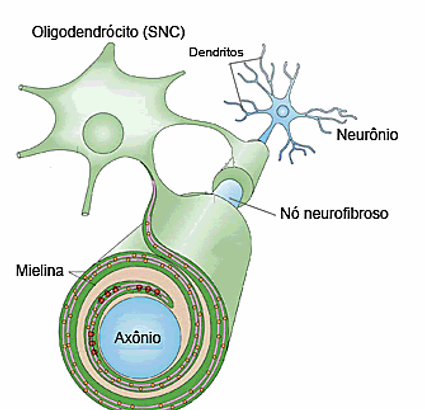

THE CELL
The neuron, or nerve cell, is the fundamental unit of the animal
nervous system. It is a highly specialized cell, found not only in
the brain and the digestive system, but also in the spinal cord and
the peripheral nerves throughout the body.

.jpeg)

ITS FUNCTIONS
Its main function is communication. Neurons are responsible for
receiving, processing, transmitting, and storing information through
electrical and chemical signals, known as nerve impulses. This
communication network forms the basis of all nervous functions,
including thought, memory, movement, sensations, and the regulation
of automatic processes such as digestion.
STRUCTURE
-
Soma (Cell Body): This is the central part of the neuron, which
contains the nucleus (with DNA) and most of the cytoplasm and
organelles (such as mitochondria and the Golgi complex). The
soma is the metabolic center of the cell, responsible for
protein synthesis and for generating the energy needed for its
activities. Its size and shape vary according to the type of
neuron.

-
Dendrites: These are numerous, short, and highly branched
extensions that project from the soma. Their main function is to
act as the cell’s “antennas,” receiving chemical stimuli
(neurotransmitters) from other neurons or the environment and
converting them into electrical signals. These signals are then
transmitted toward the cell body for processing.

-
Axon: This is a single, long, and thin extension specialized in
conducting the nerve impulse away from the cell body. Its
function is to transmit the information processed in the soma to
other cells, which may be other neurons, muscle cells, or
glands. Many axons are covered by a myelin sheath, a lipid
substance that acts as an electrical insulator, greatly
increasing the speed of impulse transmission. The final region
of the axon, called the axon terminal or synaptic bouton, is
where the electrical signal is converted into a chemical signal
to be passed on through the synapse.
